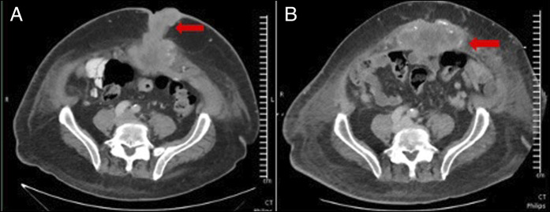
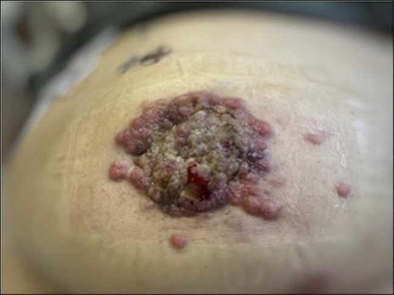

3085 — Nốt rốn (Sister Mary Joseph) / Sister Mary Joseph nodule
Tags: pattern:not pattern:di-can-da pattern:khoi-thanh-bung vung:ron-bung vung:thanh-bung protocol:sieu-am-tan-so-cao protocol:CT-bung protocol:sinh-thiet protocol:MRI-thanh-bung
Mức chắc chắn (certainty): tổng hợp y văn (literature synthesis) — ghép 1 ca công bố có ảnh gốc (nam 65 tuổi, di căn rốn từ ung thư tụy — Aijaz P et al., ACG Case Rep J 2026, PMC13004200, CC BY-NC-ND 4.0), 1 tổng quan ca + y văn (ung thư đường mật — Ky LJE et al., Clin Case Rep 2025, PMC12544702, CC BY 4.0) và 1 đoàn hệ đa trung tâm về sống còn (Tal O et al., Cancers 2026, PMC13024660, CC BY 4.0). Số nào nguồn không đưa thì ghi "chưa rõ".
Bài này trả lời 4 câu hỏi khi khám thấy "cục ở rốn": (1) Nốt rốn ở người lớn là thoát vị, u mỡ, hay di căn? (2) Siêu âm/CT đọc thế nào để không bỏ sót di căn? (3) Vì sao tuyệt đối không mổ "thoát vị rốn" khi chưa biết bản chất? (4) Sinh thiết gửi xét nghiệm gì để tìm ung thư nguyên phát? Đây là mặt da–thành bụng của di căn phúc mạc (143); khác di căn lỗ trocar sau mổ nội soi (3061) ở đường vào và cách phòng.
1. Tổng quan bệnh học – cơ chế hình ảnh
1.1 Vì sao ung thư ổ bụng "chọn" đúng rốn
- Rốn là điểm yếu giải phẫu: da dính trực tiếp vào cân rốn, không có lớp mỡ dày; các mạch máu rốn và dây chằng rốn giữa là đường dẫn từ phúc mạc ra da.
- 5 cơ chế lan (Balakrishnan, tổng hợp trong PMC12544702): (I) bạch mạch ngược dòng dưới thanh mạc từ hạch nách/bẹn/cạnh động mạch chủ (phụ khoa, thận); (II) động mạch qua nối động mạch thượng vị dưới–ngực bên–ngực trong; (III) tĩnh mạch qua nối tĩnh mạch nách/ngực trong/đùi và hệ cửa qua tĩnh mạch rốn; (IV) lan trực tiếp qua phúc mạc (tiêu hóa); (V) theo ống niệu rốn, ống noãn hoàng tồn tại, dây chằng liềm (tiết niệu–sinh dục).
- Vì sao thấy được trên hình ảnh: khối là mô đặc tăng sinh mạch chen vào mỡ dưới da — trên siêu âm giảm âm, không đồng nhất, có tín hiệu Doppler; trên CT đậm độ mô mềm 30–50 HU, ngấm thuốc sau tiêm, bờ không đều, xâm lấn mô mỡ và da; trên MRI T2 trung gian, hạn chế khuếch tán, ngấm thuốc — tức là mô tế bào dày đặc, khác mỡ (T1 sáng, T2 sáng, không ngấm) và khác nang (T2 rất sáng, không ngấm).
1.2 Số liệu nền (bắt buộc thuộc)
- Tần suất: 1–3% các ung thư ổ bụng–chậu (PMC12544702; PMC13024660); ở ung thư tụy, di căn da < 3% và vị trí hay gặp nhất là rốn (PMC13004200).
- Không tìm được ung thư nguyên phát ở 17,7% ca (Hugen, dẫn trong PMC12544702) — nên không được dừng lại khi chưa thấy u.
- Tiên lượng: sống trung vị 7,9 tháng (Hugen); có ca tử vong 7 ngày–3 tháng sau nhập viện; nhưng ngoại lệ sống dài có thật, nhất là khi cắt được toàn bộ u (PMC12544702).
- Phụ khoa: nốt rốn được xếp FIGO IVB; trong một đoàn hệ 87 ca ung thư buồng trứng giai đoạn IV, 26,4% (23/87) có nốt rốn, cắt u hoàn toàn 65,2%, sống trung vị chưa đạt so với 47,2 tháng ở nhóm di căn khác (HR 0,44; KTC 95% 0,17–1,12; p = 0,084) — tín hiệu, chưa đủ kết luận (PMC13024660).
- Kích thước: có thể tới 10 cm; bề mặt nứt, loét hoại tử, tiết dịch thanh dịch/máu/nhầy/mủ (PMC12544702).
2. Mẫu hình + chẩn đoán phân biệt theo vị trí và bối cảnh (Gamut)
- Theo hình thái: nốt đặc đơn độc (di căn, u mỡ, u xơ) → khối viêm đỏ đau (viêm rốn, áp-xe) → khối thoát vị (thoát vị rốn, thoát vị lỗ rốn có quai ruột) → tổn thương loét tiết dịch (di căn, u hạt sinh mủ, nang tuyến rốn).
- Theo ung thư nguyên phát: nữ → buồng trứng hàng đầu; nam → dạ dày, đại tràng, tụy; cả hai → đường mật, gan, bàng quang, vú, phổi (PMC12544702).
- Theo dấu hiệu "báo động": nốt cứng, cố định, bờ không đều, phát triển tuần–tháng, kèm sụt cân, cổ trướng, hạch → di căn cho đến khi chứng minh ngược lại.
- Gợi nhớ UMBILICUS: Ung thư (di căn), Mỡ/u xơ (lành), Bệnh rốn bẩm sinh (nang noãn hoàng, ống niệu rốn), Inflammation (viêm rốn/áp-xe), Lạc nội mạc (endometriosis), Iatrogenic (u hạt quanh lỗ mở), Cục máu/tụ máu, Umbilical hernia (thoát vị), Sẹo lồi/keloid.
3. Bảng so sánh phân biệt (ma trận đối chiếu)
| Thực thể (entity) | Hình ảnh điển hình | Chốt vào (rule-in) | Chốt loại (rule-out) | Gợi ý xác nhận |
|---|---|---|---|---|
| Nốt rốn di căn (SMJN) | Nốt đặc giảm âm dưới da rốn, ngấm thuốc, bờ không đều, xâm lấn; CT 30–50 HU trước tiêm | Nốt đặc xâm lấn cân + có u nguyên phát/di căn phúc mạc | Nốt đồng âm mỡ, không ngấm thuốc, có vỏ rõ → nghĩ lành | Sinh thiết + hóa mô miễn dịch; CT ngực–bụng–chậu |
| Thoát vị rốn | Khuyết cân rốn + quai ruột/mỡ đi qua, thay đổi khi Valsalva, có thể có nhu động | Khuyết cân + nội dung thoát vị di động | Khối đặc, cố định, không có khuyết cân → không phải thoát vị | Siêu âm Valsalva; CT khi nghi biến chứng |
| U mỡ (lipoma) rốn | Đồng âm/giảm âm nhẹ, đều, không có Doppler, mỡ −40 đến −120 HU trên CT | HU âm thuần mỡ, bờ rõ, không ngấm thuốc | Đậm độ mô mềm + ngấm thuốc → loại u mỡ | Siêu âm; CT nếu không chắc |
| Lạc nội mạc rốn | Nốt đặc ± nang nhỏ, đau theo chu kỳ kinh, có thể chảy máu theo kỳ | Đau/ra máu theo chu kỳ + tiền sử sản khoa | Không liên quan chu kỳ + sụt cân → nghĩ ác | MRI: ổ xuất huyết T1 sáng; sinh thiết |
| Viêm rốn/áp-xe | Dày mô mềm, tăng sinh mạch, dịch hóa, có thể khí | Đỏ, đau, sốt, chảy mủ | Khối cứng, không đau, không sốt → không phải viêm đơn thuần | Siêu âm; chọc hút chỉ sau khi loại di căn |
| U hạt quanh lỗ mở (granuloma) | Nốt nhỏ ở mép lỗ mở dạ dày–da, ẩm, dễ chảy máu | Vị trí đúng mép lỗ mở + tiền sử ống | Khối cách lỗ mở, xâm lấn sâu → nghĩ di căn | Nội soi/khám; sinh thiết nếu không điển hình |
| Nang noãn hoàng/ống niệu rốn | Nang dịch dưới rốn, hình ống, có thể thông bàng quang | Cấu trúc dạng ống, dịch, ở đường giữa dưới rốn | Khối đặc ngấm thuốc → không phải nang | Siêu âm; CT/MRI đường đi |

(A) Nốt mô mềm quanh rốn xâm lấn mỡ dưới da; (B) ổ di căn khác ở thành bụng trước. Bờ không đều, đậm độ mô mềm, ngấm thuốc — mẫu hình của di căn chứ không phải u mỡ. Nguồn: ACG Case Rep J 2026, PMC13004200, CC BY-NC-ND 4.0 (nguyên bản).3.1 Ba câu hỏi hình ảnh quyết định
- Khối có khuyết cân không? Có + nội dung di động theo Valsalva = thoát vị; không có khuyết cân + khối đặc = phải loại di căn.
- Đậm độ/tín hiệu có phải mỡ không? −40 đến −120 HU hoặc T1 sáng + fat-sat tối = mỡ lành; 30–50 HU + ngấm thuốc = mô đặc.
- Có u nguyên phát hoặc dịch phúc mạc không? Luôn chụp toàn bộ ngực–bụng–chậu; 17,7% không tìm thấy u nguyên phát nhưng di căn phúc mạc/hạch vẫn gợi ý.
4. Protocol chụp + quy trình chẩn đoán
4.1 Trình tự (không đảo thứ tự)
- Khám + siêu âm tần số cao (12–18 MHz) tại giường: vị trí so với cân rốn, kích thước mm, đậm độ, bờ, Doppler, có khuyết cân hay không.
- CT bụng–chậu có cản quang tĩnh mạch (lát 1–2 mm vùng rốn) + CT ngực: tìm u nguyên phát, di căn phúc mạc, hạch, di căn phổi.
- MRI thành bụng khi cần phân biệt mô mềm–máu–nhầy (T1/T2 fat-sat, DWI, sau tiêm) hoặc khi CT không kết luận.
- Sinh thiết (core 14–16 G hoặc FNA) TRƯỚC mọi can thiệp khác, gửi hóa mô miễn dịch định nguồn: CK7/CK20, PAX8 (buồng trứng/nội mạc), CDX2 (đại tràng), TTF1 (phổi/tuyến giáp), GATA3 (vú/niệu), S100/HMB45 (melanoma).
- Không chọc dẫn lưu "áp-xe" và không mổ "thoát vị" khi chưa có kết quả mô học — ca PMC13004200 cho thấy nốt lớn nhanh, loét, đau sau mổ nội soi thoát vị, kèm di căn lỗ trocar.
4.2 Ngưỡng hành động
- Nốt rốn > 10 mm, đặc, không đau, phát triển trong vài tuần ở người > 40 tuổi → sinh thiết trong vòng 1–2 tuần.
- Có ung thư đã biết + nốt rốn mới → coi là di căn cho tới khi chứng minh ngược lại, không chờ "theo dõi 3 tháng".
- Sau khi có mô học: chuyển ung thư học để phân giai đoạn; phẫu thuật chỉ đặt ra khi cắt được toàn bộ (như 65,2% ca buồng trứng cắt hoàn toàn, PMC13024660).
flowchart TD
A[Người lớn có nốt rốn mới] --> B{Siêu âm tần số cao}
B -->|Khuyết cân và nội dung di động| C[Thoát vị rốn: theo dõi hoặc mổ theo triệu chứng]
B -->|Khối đặc giảm âm có Doppler| D[CT bụng chậu và CT ngực có cản quang]
D --> E{Có u nguyên phát hoặc di căn phúc mạc}
E -->|Có| F[Sinh thiết rốn và hóa mô miễn dịch]
E -->|Không| F
F --> G{Kết quả mô học}
G -->|Di căn| H[Phân giai đoạn và điều trị toàn thân, chỉ mổ khi cắt được toàn bộ]
G -->|Lành tính| I[Theo dõi hoặc xử trí theo bản chất tổn thương]
4.3 Vì sao thứ tự này quan trọng
- Mổ trước, chẩn đoán sau làm tăng nguy cơ gieo rắc tại vết mổ và di căn lỗ trocar — đúng diễn tiến của ca PMC13004200 sau mổ nội soi thoát vị.
- Chọc hút/dẫn lưu một nốt di căn có thể tạo đường rò tiết dịch vĩnh viễn và nhiễm trùng tại chỗ.
5. Biến thể bình thường và cạm bẫy
- Biến thể bình thường: nếp da rốn dày ở người béo, sẹo rốn cũ sau mổ nội soi, u hạt rốn ở trẻ sơ sinh (rụng cuống rốn) — đều không xâm lấn cân, không ngấm thuốc mạnh.
- Cạm bẫy 1 — gọi là "thoát vị rốn" vì sờ thấy khối: thoát vị có khuyết cân; nốt di căn là khối đặc cố định. Ca PMC13004200: nốt nhỏ trước mổ, lớn nhanh và loét sau mổ.
- Cạm bẫy 2 — điều trị "viêm rốn" bằng kháng sinh nhiều đợt: nốt rốn không đau, không sốt, không đỏ mà vẫn lớn → không phải viêm; trì hoãn sinh thiết làm mất cơ hội điều trị.
- Cạm bẫy 3 — chỉ chụp vùng rốn: bỏ sót u nguyên phát ở tụy/buồng trứng/dạ dàng và di căn phúc mạc; luôn chụp ngực–bụng–chậu.
- Cạm bẫy 4 — tưởng "u mỡ" vì siêu âm giảm âm nhẹ: u mỡ không có Doppler và −40 đến −120 HU; khối có mạch + đậm độ mô mềm phải sinh thiết.
- Cạm bẫy 5 — bỏ qua rốn khi khám bụng: nốt có thể nằm trong nếp rốn, chỉ thấy khi lộn rốn ra — khám rốn là bước bắt buộc ở mọi bệnh nhân sụt cân/cổ trướng.
6. Tự lượng giá — Blind Quiz
Ca 1 — Nam 65 tuổi, đái tháo đường, thấy nốt nhỏ quanh rốn trước khi mổ thoát vị rốn theo kế hoạch.
- Gợi ý lâm sàng: nốt tăng nhanh sau mổ, loét, đau; CT có khối đuôi tụy 3,4 cm và ổ khuyết xương đốt sống.
- Câu hỏi: hai ổ mũi tên trên CT là gì? Vì sao không được mổ thoát vị trước khi chẩn đoán?
Bấm để hiện đáp án
- (A) Nốt di căn quanh rốn, (B) ổ di căn thành bụng trước — bờ không đều, đậm độ mô mềm, ngấm thuốc.
- Chẩn đoán: ung thư biểu mô tuyến ống tụy giai đoạn IV (khối đuôi tụy 3,4 cm + di căn da + di căn xương); sinh thiết: KRAS G12C, MTAP, CDKN2A/B mất, TP53.
- Vì sao không mổ trước: can thiệp vào ổ di căn gieo rắc tại vết mổ; ca này còn có di căn lỗ trocar sau nội soi.
- Nguồn: ACG Case Rep J 2026, PMC13004200, CC BY-NC-ND 4.0.
Ca 2 — Cùng bệnh nhân, nhìn bụng trước khi mổ: mô tả trước, đừng đoán.

- Câu hỏi: mô tả tổn thương; ba chẩn đoán phân biệt; một câu hỏi lịch sử giúp phân biệt?
Bấm để hiện đáp án
- Nốt quanh rốn, hợp nhất, loét, dễ chảy máu, lan ra trên xương mu — hình thái di căn da, không giống u mỡ/thoát vị.
- Phân biệt: di căn rốn (SMJN), u hạt sinh mủ, lạc nội mạc rốn (đau theo chu kỳ), thoát vị rốn (khuyết cân).
- Câu hỏi lịch sử: "Có đau/ra máu theo chu kỳ kinh không?" — có thì nghĩ lạc nội mạc; không kèm sụt cân, không đau → nghi di căn.
- Nguồn: ACG Case Rep J 2026, PMC13004200, CC BY-NC-ND 4.0 (nguyên bản, không chỉnh sửa).
Bài liên quan chéo
- 141 – Phúc mạc: giải phẫu & tổng quan
- 143 – U trung biểu mô phúc mạc vs carcinomatosis
- 3061 – Di căn lỗ trocar sau PIPAC và nội soi
- 1618 – Di căn da thành ngực ở ung thư vú
- 121 – Khối gan và LI-RADS (tìm u nguyên phát)
Ảnh
images/3085_di-can-ron_CT_PMC13004200.jpg— CT: nốt quanh rốn + ổ thành bụng trước — ACG Case Rep J 2026, PMC13004200, CC BY-NC-ND 4.0 (nguyên bản).images/3085_di-can-ron_lam-sang_PMC13004200.jpg— ảnh lâm sàng nốt rốn — cùng bài, CC BY-NC-ND 4.0 (nguyên bản).- Chi tiết nguồn + giấy phép:
images/CREDITS.md.
Không dùng để chẩn đoán độc lập khi chưa có người hướng dẫn.